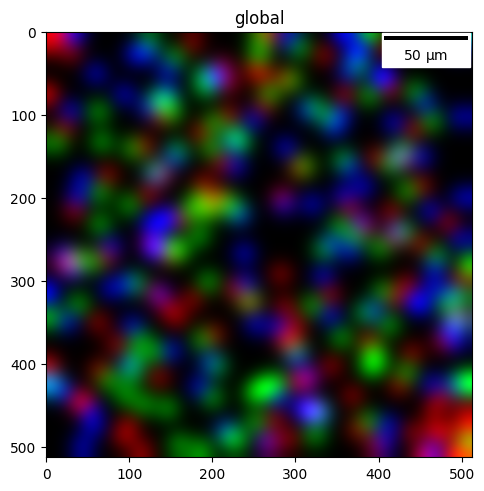
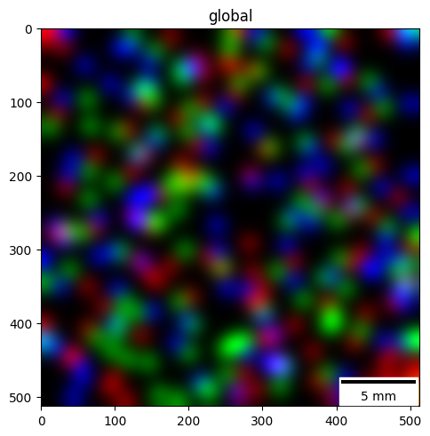
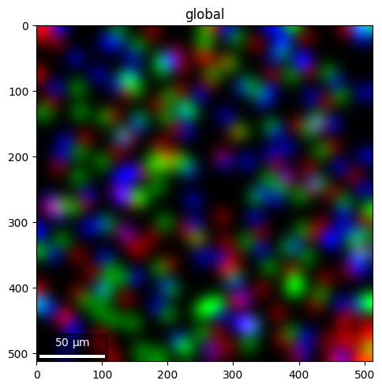
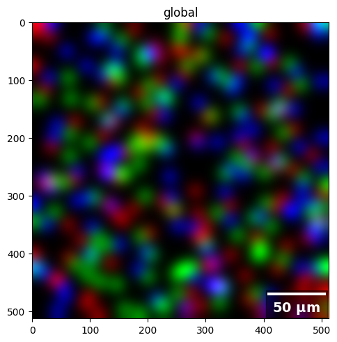
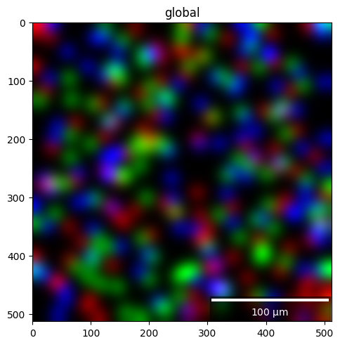
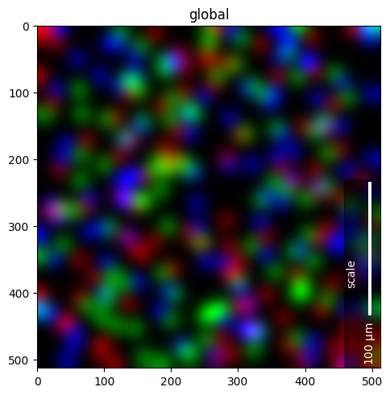

Scalebars in spatialdata-plot#
A scalebar tells the reader the physical size of what they are looking at. spatialdata-plot draws one through the scalebar_* arguments of .pl.show(). The one thing to get right is scalebar_dx: because SpatialData coordinate systems carry no physical-unit metadata, you have to tell the plot how large one axes-unit is.
By the end you should be able to:
Add a scalebar and explain what
scalebar_dxmeans and why it is required.Choose the unit with
scalebar_unitsand let the bar auto-scale (µm → mm).Style the bar (placement, colour, box, length, fonts) via
scalebar_params.Pin an exact bar length with
fixed_value.
We use the synthetic blobs dataset throughout so the notebook stays small and reproducible. Its images have no real-world scale, so we will pretend they were acquired at 0.5 µm per pixel.
Setup#
import spatialdata as sd
import spatialdata_plot # noqa: F401 # registers the .pl accessor
sdata = sd.datasets.blobs()
sdata
SpatialData object
├── Images
│ ├── 'blobs_image': DataArray[cyx] (3, 512, 512)
│ └── 'blobs_multiscale_image': DataTree[cyx] (3, 512, 512), (3, 256, 256), (3, 128, 128)
├── Labels
│ ├── 'blobs_labels': DataArray[yx] (512, 512)
│ └── 'blobs_multiscale_labels': DataTree[yx] (512, 512), (256, 256), (128, 128)
├── Points
│ └── 'blobs_points': DataFrame with shape: (<Delayed>, 4) (2D points)
├── Shapes
│ ├── 'blobs_circles': GeoDataFrame shape: (5, 2) (2D shapes)
│ ├── 'blobs_multipolygons': GeoDataFrame shape: (2, 1) (2D shapes)
│ └── 'blobs_polygons': GeoDataFrame shape: (5, 1) (2D shapes)
└── Tables
└── 'table': AnnData (26, 3)
with coordinate systems:
▸ 'global', with elements:
blobs_image (Images), blobs_multiscale_image (Images), blobs_labels (Labels), blobs_multiscale_labels (Labels), blobs_points (Points), blobs_circles (Shapes), blobs_multipolygons (Shapes), blobs_polygons (Shapes)
1. The one required piece: scalebar_dx#
scalebar_dx is the physical size of one axes-unit. The blobs image is indexed in pixels, so one axes-unit is one pixel; at our assumed resolution that is 0.5 µm. Pass that as scalebar_dx (a float), and the unit it is measured in as scalebar_units.
PX_SIZE_UM = 0.5 # physical size of one pixel, taken from the acquisition metadata
sdata.pl.render_images("blobs_image").pl.show(
scalebar_dx=PX_SIZE_UM,
scalebar_units="um",
)

Without scalebar_dx there is no scalebar — the plot has no way to know the physical size, and it never guesses. Two things worth remembering:
If your coordinate system is in pixels,
scalebar_dxis the micron-per-pixel value.If a transformation already put the coordinate system in physical units (µm), then one axes-unit is one µm, so
scalebar_dx=1.0.
In multi-panel plots the same scalebar is drawn on every panel.
2. Units and auto-scaling#
scalebar_units is simply the unit your scalebar_dx is expressed in. In the background, it uses matplotlib-scalebar, which picks a human-friendly magnitude automatically — a bar spanning thousands of µm is relabelled in mm. Here the same image at a coarse 50 µm/pixel crosses that threshold:
sdata.pl.render_images("blobs_image").pl.show(
scalebar_dx=50.0, # coarse resolution: 50 µm per pixel
scalebar_units="um",
scalebar_params={"location": "lower right"},
)

3. Placement and appearance with scalebar_params#
scalebar_params is a dict forwarded to matplotlib-scalebar’s ScaleBar, so every option it supports is available. The ones you will reach for most:
location— which corner ("lower right","upper left", …).color— bar and text colour (use white on dark images).frameon/box_alpha/box_color— the background box behind the bar.length_fraction— target bar length as a fraction of the axes width.scale_loc/label_loc— where the number and unit sit relative to the bar.
The default box is white, so on a dark image like blobs you either keep the default (dark bar on a white box) or, if you switch to color="white", pair it with a dark box (box_color/box_alpha) or frameon=False — otherwise the white bar lands on the white box and disappears.
sdata.pl.render_images("blobs_image").pl.show(
scalebar_dx=PX_SIZE_UM,
scalebar_units="um",
scalebar_params={
"location": "lower left",
"color": "white",
"box_color": "black",
"box_alpha": 0.4,
"length_fraction": 0.25,
"scale_loc": "top",
},
)

Font styling goes through font_properties, a matplotlib font dict:
sdata.pl.render_images("blobs_image").pl.show(
scalebar_dx=PX_SIZE_UM,
scalebar_units="um",
scalebar_params={
"location": "lower right",
"color": "white",
"box_color": "black",
"box_alpha": 0.5,
"font_properties": {"size": 14, "weight": "bold"},
},
)

4. Pinning an exact bar length#
By default the bar snaps to a round length near length_fraction. To force an exact length — e.g. a 100 µm bar for a figure panel — set fixed_value (and fixed_units):
sdata.pl.render_images("blobs_image").pl.show(
scalebar_dx=PX_SIZE_UM,
scalebar_units="um",
scalebar_params={
"location": "lower right",
"color": "white",
"box_color": "black",
"box_alpha": 0.5,
"fixed_value": 100,
"fixed_units": "um",
},
)

5. Rotating the bar and adding a label#
Two more scalebar_params round things out. rotation ("horizontal" or "vertical") turns the bar on its side — useful when the free space in a panel is a tall strip rather than a wide one. label adds your own text alongside the automatic value, effectively a title for the bar, and label_loc ("left", "right", "top", "bottom") places it relative to the bar.
sdata.pl.render_images("blobs_image").pl.show(
scalebar_dx=PX_SIZE_UM,
scalebar_units="um",
scalebar_params={
"location": "lower right",
"color": "white",
"box_color": "black",
"box_alpha": 0.5,
"fixed_value": 100,
"fixed_units": "um",
"rotation": "vertical",
"label": "scale",
"label_loc": "left",
},
)

For reproducibility#
# ruff: noqa: F401, F811, I001, E402
# fmt: off
import spatialdata_plot
%load_ext watermark
# fmt: on
%watermark -v -m -p spatialdata,spatialdata_plot,matplotlib,matplotlib_scalebar
Python implementation: CPython
Python version : 3.14.4
IPython version : 9.13.0
spatialdata : 0.7.3
spatialdata_plot : 0.4.0
matplotlib : 3.10.9
matplotlib_scalebar: 0.9.0
Compiler : Clang 20.1.8
OS : Darwin
Release : 25.2.0
Machine : arm64
Processor : arm
CPU cores : 8
Architecture: 64bit